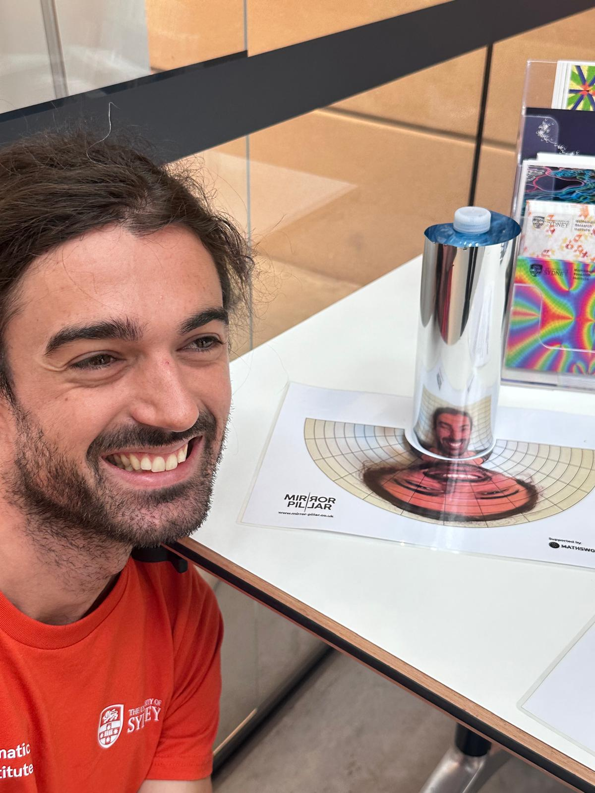

Depuis septembre 2026, je suis postdoctorant à l'IRMAR, à Rennes, dans le cadre du projet ANR IsoMoDyn, avec Frank Loray.
Avant ça, j'ai fait ma thèse à Sorbonne Université, sous la direction de Maxime Wolff, puis un postdoctorat au Sydney Mathematical Research Institute.
thomas.le-fils (at) cnrs (dot) fr
ou thomaslefils (at) gmail (dot) com
Relative periods of abelian differentials in a prescribed stratum (arXiv).
Echoes in genus three of Teichmüller curves in genus two (arXiv).
Compatible pants decompositions for SL2(C)-representations of surface groups,
avec Renaud Detcherry et Ramanujan Santharoubane.
Groups, Geometry, and Dynamics (2025).
Holonomy of complex projective structures on surfaces with prescribed branch data.
Journal of Topology (2023).
Periods of abelian differentials with prescribed singularities.
International Mathematics Research Notices (2022).
Pentagon representations and complex projective structures on closed surfaces.
Annales de l'Institut Fourier (2023).